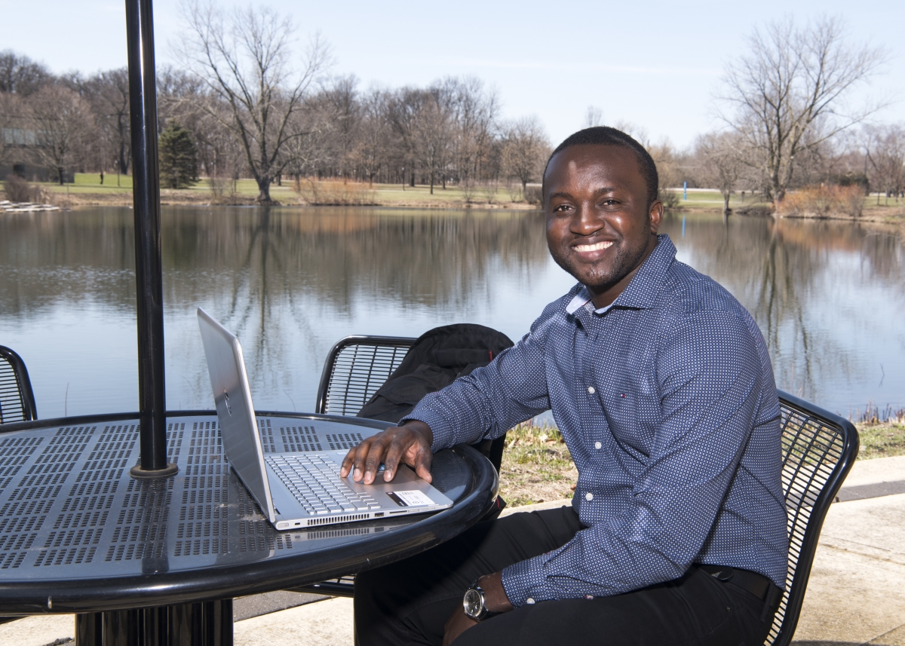
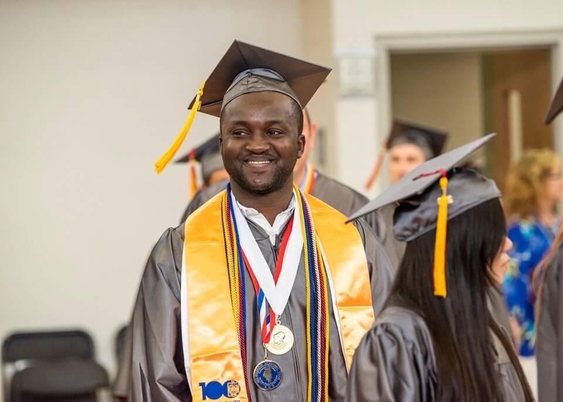

Hello! I'm Emmanuel Noufele
This is my portfolio, and I hope you will enjoy reading about me.
A summary of my story
I am originally from Cameroon, which is in Central Africa. I speak French as a first language and I emigrated to the United States four years ago with the dream to become an engineer. I was completely overwhelmed at first because I spoke almost no English. It wasn't straightforward for me to understand and talk to people. However, in the Summer of 2015, I started with English as a second language (ESL) at Waubonsee Community College. I completed the program one year later, and I graduated with my Associate Degree in computer science in May 2019. Now I am a junior student studying computer science at the University of Illinois at Urbana Champaign. I ended up choosing computer science because of my passion for technology and the desire I have to solve complex problems. In 2015, I was nominated to emigrate to the United States and continue my education; my mother, however, was hesitant. At first, she did not want me to go. She thought it would be hard to succeed in another country where another language was spoken. I reminded her of all she and my father taught me, and I convinced her I could succeed. I ended up coming to the United States where I continue to work hard to pursue my dream of becoming a software engineer.
Unique Moment
Before transferring to the University of Illinois at Urbana - Champaign, I was a student at Waubonsee Community College, where I graduated with An Associate Degree in Engineering science. This picture of me was the day of my graduation. This moment is unique to me because three years from that day, I would not imagine getting to that point, looking at my English language.
Unique Leadership Experience
While at Waubonsee Community College, I had the opportunity to be part of the Student Government, where I met great people and serve as a Senator for three semesters.

What I do during my free time!
During my free time, I enjoy watching soccer and also giving back to my Community. I spent the past two spring breaks volunteering with non-profit organizations. In 2018, I spent my spring break with 13 other students in Louisville, Kentucky, volunteering with Habitat for Humanity in Richmond, Kentucky, building safe, affordable housing, and learning about substandard living conditions. In 2019, we did the same thing, but in Houston, Texas, with All Hands and Hearts in Houston, Texas, helping with Hurricane Harvey recovery.
2018 and 2019 Pictures!

Projects I have worked on...
I have worked on a number of small projects where I :
- Graph Programming: where I implemented a directed graph in C++ using a graph data structure to implement the depth and breath first traversal algorithm for a flight ticket search application
- Temperature Controlled System: where I designed a temperature-controlled system using Adruino kit and Python to successfully turn on and off 12-volt fan by detecting the surrounding temperature
- Waubonsee Quiz Android Application: where I created an Android Application with Android Studio and Java for new students to get to know Waubonsee Community College
- Database Management: where I developed a code in Python with the goal to retrive stored data from the course intructor database so it can be displayed on a dashboard
People Who inspire me
Denzel Washington has been a source of inspiration for me since I emigrated to the United States. I used to watch his movies and speeches to motivate myself and continue to work hard to reach my dream. What I learn from him is not to be afraid to fail big, dream big, and have goals that we must apply Discipline and consistency to achieve.

Click here to see some of my favourite quotes!
Click here to see comments about the Page: